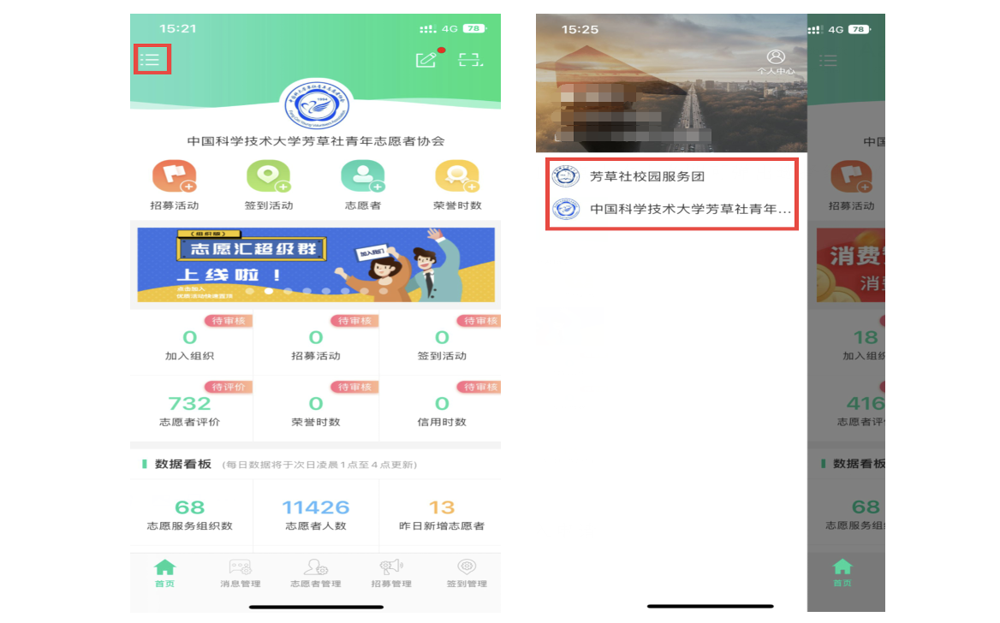
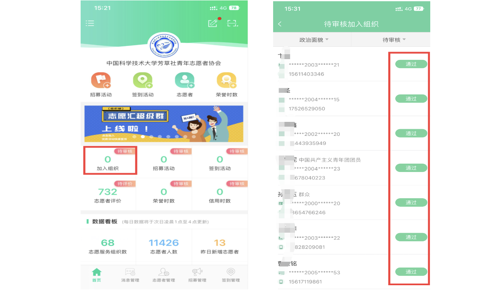
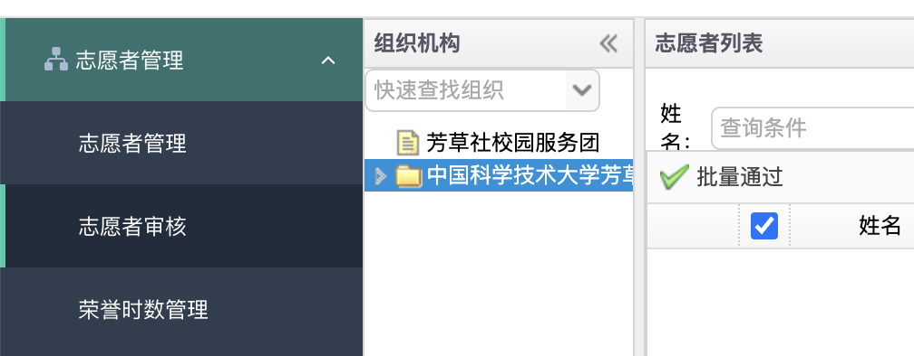
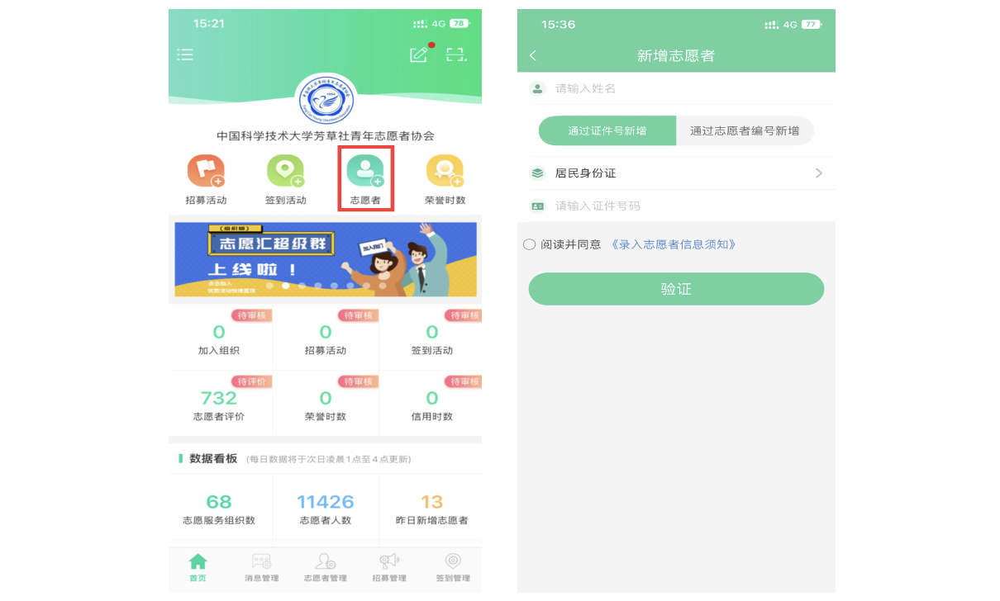
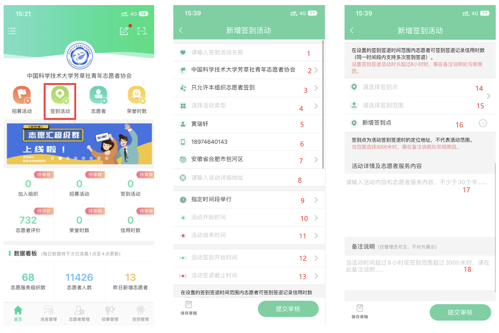
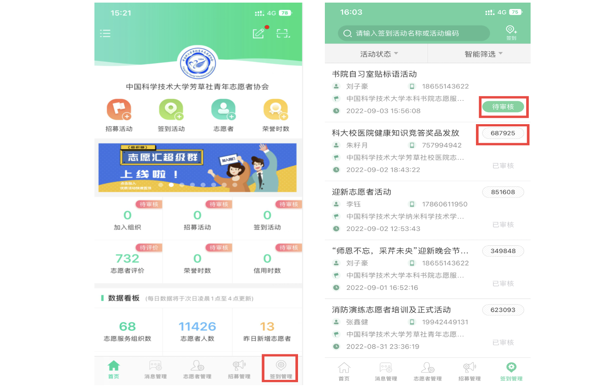
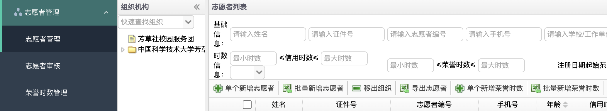
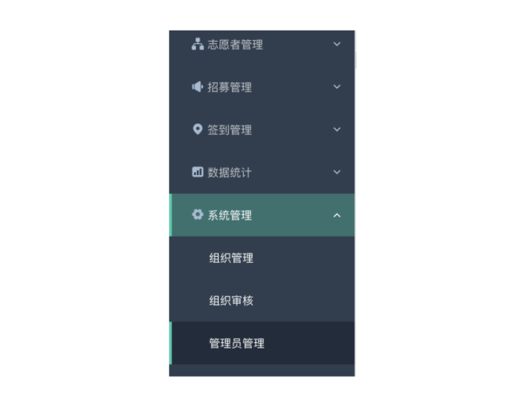

志愿汇和志愿服务时长（负责人版）¶
如何切换自己的组织？¶
打开志愿汇组织版 APP，点击左上角即可弹出选择组织的列表。

值得一提的是，“中国科学技术大学芳草社青年志愿者协会”在系统里与其他院系青协、服务团等组织实际上是平级的，组织内部开展的活动（报名范围选择组织内部的活动）是无法被仅加入“中国科学技术大学芳草社青年志愿者协会”的志愿者签到参与的。
如何通过志愿者加入申请？¶
APP：在首页选择“加入组织”模块，确保右上角筛选器为“待审核”，然后即可选择通过。

PC：先将组织切换为需要审核的组织，然后点击左侧「志愿者管理」-「志愿者审核」，点击「批量通过」下的复选框全选后即可选择「批量通过」，刷新后可继续审核下一批。

值得一提的是，志愿者的信息也可以做粗略的审核。2022年有发现2010年出生的志愿者加入了“中国科学技术大学芳草社青年志愿者协会”这个组织，这显然不合常理。
如何手动新增志愿者？¶
在首页选择“志愿者+”模块，然后填写需要手动新增的志愿者的名字和身份证号，即可手动新增志愿者。

提示：若无特殊情况，请让志愿者注册后申请加入组织，不要手动添加志愿者。
如何发起签到活动？¶

进入签到活动发布页面后，每项该如何填写？请对照上图数字与下面的解释来进行：
（1） 输入活动的名字，一年举办一次的活动最好带上年份。
（2） 选择活动的主办方，只能从自己有管理权限的组织列表中选取。
（3） 允许签到的志愿者身份，如果选择“只允许本组织志愿者签到”，只有加入了活动主办方组织的志愿者才可签到；面向全校的活动请选择“全体开放”。
（4） 活动类型，随意选取。
（5） 活动发布者信息，无需改动。
（6） 活动发布者信息，无需改动。
（7） 活动的举办地点，这个是粗略的地点，精确到我们学校就可以了。
（8） 活动的举办地点，这个是粗略的地点，精确到我们学校就可以了。
（9） 活动的举办时间段，有三种情形：
- 自己指定活动开始的一段日期，如6月1日至6月1日（当天）或6月1日至6月2日（两天）；
- 每周固定星期几举行，不过也需要设置起止周时间；
- 每月固定哪几天举行，不过也需要设置起止时间。
（12-13）活动签到时间，这个时间是“一天”的时间，对（9）设置的每一天都适用，因此发布的志愿活动具体小时范围每天是固定的，暂时没办法发布6月1日上午+6月2日下午这样的活动，这样的活动只能申请两次（一次上午，一次下午）。
（14-15）签到地点，输入地址后（如中国科学技术大学西校区图书馆）会出来一些待选选项，请从待选选项中选择。签到范围请根据活动性质酌情设置。
（16）同一个活动可以设置多个签到点，比如在西区和东区开展的活动。点击“新增签到点”即可添加一个。
（17）活动详情，这个还是需要正经写的，满足30个字，然后符合“志愿服务活动”的内容即可，否则有可能被管理员打回。
（18）可写可不写。
- 填写完毕后，点击“提交审核”按钮即可。由志愿汇平台（非我校老师）审核，所以请提前申请项目，以防“活动开始了签到码还没通过审核”这种情况的发生。
- 如果需要复制其他活动的模板，请按如下流程：首页——右下角“签到管理”——选择你要复制的活动，点击它——左下角“复制活动”——“确定”。即可按照此活动的填写信息来预填写一个新的签到活动，在此基础上可以修改的。
- 活动通过平台审核后，申请人将收到志愿汇平台发来的短信告知签到码，请注意查收。
- 建议签到时间在活动真实时间外设置一定的缓冲期，以防志愿者忘记签到签退这种情况的发生。如活动真实时间为12:30~13:30，签到时间就可以设置为12:15~13:45。
如何查看已通过活动的签到码？¶
首页右下角点击“签到管理”。

若活动暂未通过审核，会显示“待审核”。若已通过审核，会在此处显示6位签到码。
活动申请者在活动通过申请后收到志愿汇平台的短信通知中也含有这个签到码。
如何为志愿者补录荣誉时长？¶
APP：首页点击“荣誉时数+”按钮，即可进入添加。
- 需要向志愿者索要身份证号，才可以顺利添加。
- 平台限制，添加的荣誉时数+实际签到数不能超过活动时间，比如1:00~3：00开展了2个小时的活动，志愿者只签到了0.5小时，则最多只能给志愿者补录1.5小时。
- 活动后，若有较多同学没有按时签到签退，可用问卷星等收集数据，再统一补录。
PC：先将组织切换为需要添加时长的志愿者所在的组织，选择「志愿者管理」-「志愿者管理」，选择「单个新增荣誉时长」或「批量新增荣誉时长」。

我校当前荣誉时长的补录原因有两个，各有一些注意事项。
（1） 志愿者未在规定时间内签到签退；原则上仅受理一个月内此类补录的请求，如果超出一个月，请援引芳草社于2022年3月24日发布的《志愿服务时长补录暂行办法》拒绝。
（2） 志愿者在校外做的志愿活动，想导入到志愿汇或二课平台上。
- 如果志愿者有校外的志愿服务项目（在志愿汇上有时长，但不是我校志愿服务的项目）想导入我校二课平台，可以使用添加荣誉时长并挂靠到我校某志愿服务项目下的方式，待二课导入完毕后再删除时长；
- 若志愿者有线下做的志愿服务活动（即未在志愿汇上登记时长），请援引芳草社于2022年3月24日发布的《志愿服务时长补录暂行办法》告知志愿者提交相关信息给会长团或青志中心。
旧负责人如何给新负责人赋予志愿汇组织管理权限？¶
- 登录志愿汇PC端平台
- 左侧栏选择“系统管理”-“管理员管理”。

- 新增管理员：直接点击“新增”按钮即可；删除管理员：选中记录后再点击“删除”按钮即可。